『 Humano 』
Tipo: Humano
Origem e Descrição breve:
Os humanos são a espécie predominante do Continente Mágico. Surgiram na Era do Caos e ganharam notoriedade após a derrota do Deus Maligno por dois de seus heróis, tranzendo consigo a Era dos Humanos.Características:
Alta adaptabilidade a diferentes biomas e condições mágicas.Crescimento populacional acelerado em comparação às demais espécies.
Forte capacidade de organização social e política.
Tendência à expansão territorial e consolidação de poder.
Habilidades Intrínsecas:
Nenhuma.Cultura:
Extremamente diversa, variando entre reinos militaristas, teocracias devotas aos Heróis Imortais e nações comerciais expansionistas. Valorizam progresso, legado e linhagem. A história da derrota do Deus Maligno é ensinada como símbolo máximo do potencial humano.Observações:
São a maioria populacional do continente.Atualmente detêm a maior parte das rotas comerciais e centros acadêmicos.
Outras espécies os veem com respeito, cautela ou ressentimento.
Apesar da ausência de habilidades intrínsecas, sua capacidade de evolução constante os torna imprevisíveis a longo prazo.

『 Demonóide 』
Tipo: Monstro / Humano
Origem e Descrição breve:
Demonóide é um termo usado para humanos que passaram pelo processo de majinização, tornando-se Majins. Como a natureza monstruosa adquirida varia de indivíduo para indivíduo, o termo é utilizado de forma ampla para definir humanos transformados em seres mágicos.Características:
Possuem enormes reservas de magículas.Grande afinidade natural para magias.
Elevada longevidade e resistência mágica.
Habilidades Intrínsecas:
Nenhuma.Cultura:
Por serem isolados da sociedade humana em um geral os demonóides não tendem a formar uma cultura ou um grupo conjunto. Existem especulações de que o Império Oriental Unido de Alaric Eisenkrone residem demonóides como humanos comuns, relevando sua natureza monstruosa.Observações:
Mesmo sendo monstros continuam parecendo humanos por fora.A transformação altera profundamente o corpo e a alma do indivíduo.
São classificados como monstros devido à constituição mágica de seus corpos.
Odiados por todo território humano.
Vulneráveis aos efeitos purificadores da Magia Sagrada.
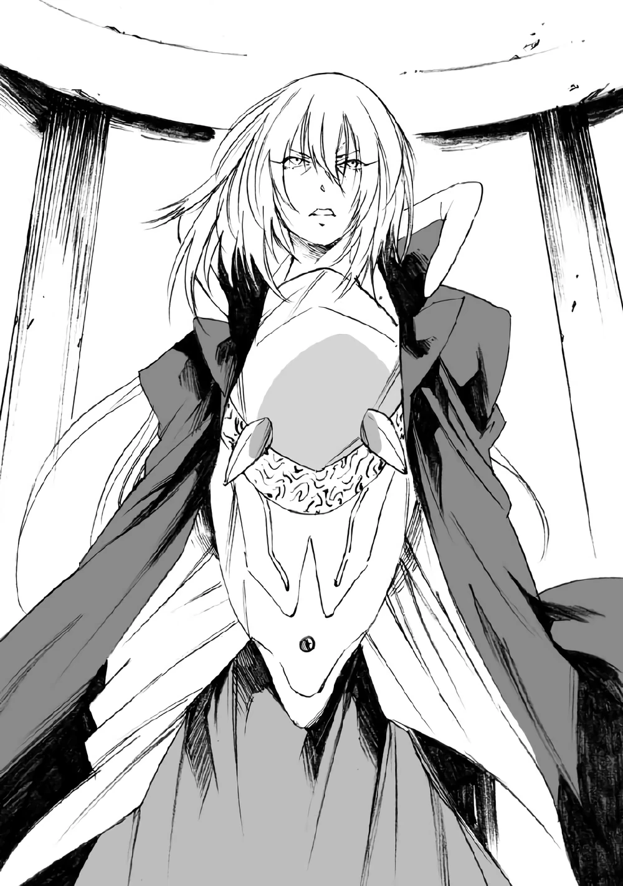
『 Elfo 』
Tipo: Semi-Humano
Origem e Descrição breve:
Os elfos são uma espécie milenar, gerados a partir da Grande Árvore da Vida. Segundo as lendas da Dinastia Feiticeira, o primeiro elfo nasceu de um fruto abençoado que caiu do mais alto galho da Árvore da Vida, misturando a essência da natureza com a magia feérica ancestral os fazendo descendentes diretos das fadas.Características:
Longevidade e conexão com o mundo.Dependencia de outras espécies para expandirem sua população.
Facilidade em manipular magias de vento desde pequenos.
Formam contratos com espíritos do vento de forma natural.
Habilidades Intrínsecas:
Nenhuma.Cultura:
Concentrada na Dinastia Feiticeira, tendo uma estrutura política consistente em um conselho de anciões, mas ainda tendo uma família real que tem autoridade ilimitada. Tendo uma mentalidade muito mais voltada para as artes místicas e para a compreensão do fluxo natural das coisas.Observações:
São considerados a maior potência mágica do continente.Atraem estudantes e viajantes de todas as partes para estudarem na Sylvatír (Terra de Florestas Sagradas) a maior formadora de magos do continente.
Embora mantenham relações diplomáticas e comerciais, olham para o crescimento acelerado e expansionista dos humanos com uma mistura de cautela e reserva.
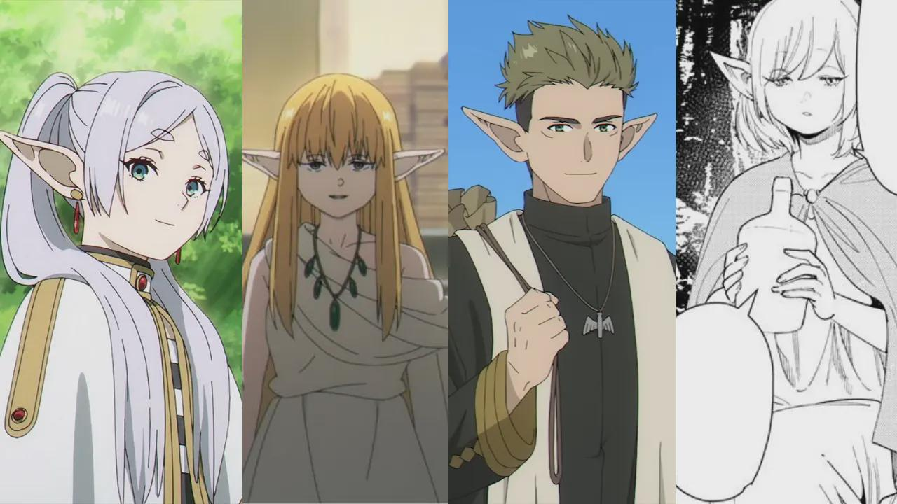
『 Anão 』
Tipo: Semi-Humano
Origem e Descrição breve:
Os anões são uma antiga espécie semi-humana descendente dos espíritos feéricos da terra, diferente dos elfos. A maioria possui baixa estatura, corpos robustos, pele mais escura e grandes barbas, embora existam raros indivíduos capazes de alcançar a altura de humanos ou elfosCaracterísticas:
Grande resistência física e longevidade.Facilidade em manipular magia de terra.
Formam contratos com espíritos da terra de forma natural.
Personalidade séria, pragmática e descontraída entre aliados.
Habilidades Intrínsecas:
Nenhuma.Cultura:
Vivem nas montanhas da Nação Armada de Gerhardt, organizados em clãs e guildas de artesãos. Sua cultura gira em torno da metalurgia, mineração e criação de artefatos mágicos, sendo considerados os melhores ferreiros do continente. Mantêm relações neutras com praticamente todas as nações devido à dependência global de seus equipamentos e comércio.Observações:
São responsáveis pelos melhores armamentos e armaduras do continente.Possuem a maior miscigenação cultural entre todas as espécies.
Raramente são incluídos em planos de guerra devido à neutralidade e à dificuldade de invadir seus territórios montanhosos.
Mesmo sendo vistos como rígidos, costumam ser hospitaleiros com aqueles que respeitam suas tradições.
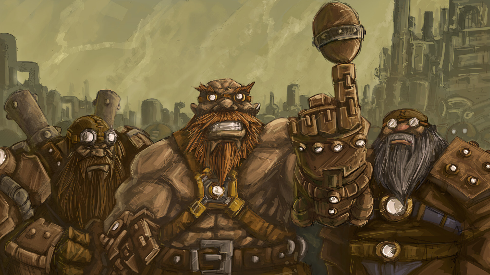
『 Goblin 』
Tipo: Semi-Humano
Origem e Descrição breve:
Os goblins são considerados a ramificação mais fraca e degenerada entre os semi-humanos, estando tão distantes de seus ancestrais anões e onis que muitos estudiosos sequer conseguem encontrar semelhanças além de traços mágicos residuais. Pequenos, frágeis e de aparência grotesca, sobreviveram ao longo das eras não pela força, mas por sua capacidade absurda de reprodução.Características:
Extremamente fracos fisicamente e mentalmente em comparação às demais espécies.Altíssima fertilidade, especialmente em períodos de crise.
Vivem em média apenas 10 anos.
Habilidades Intrínsecas:
Nenhuma.Cultura:
Vivem em pequenas tribos espalhadas por cavernas, ruínas, florestas e regiões abandonadas. Sua sociedade é primitiva, baseada em sobrevivência imediata e reprodução constante. Podendo produzir ferramentas mas não tendo a capacidade de criar armaduras complexas ou semelhantes sem que ensinado antes.Observações:
São considerados os semi-humanos mais fracos do continente.Mesmo sofrendo perdas enormes, conseguem reconstruir populações inteiras em pouco tempo.
Capazes de adaptação rápida a ambientes hostis devido à reprodução em massa.
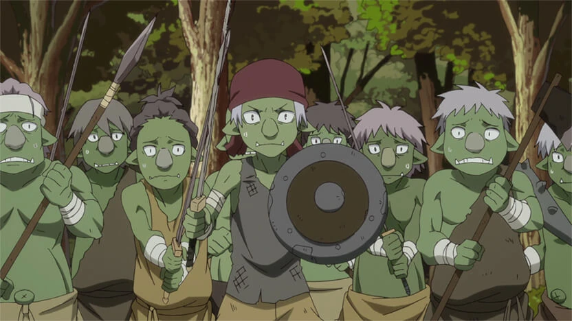
『 Hobgoblin 』
Tipo: Semi-Humano
Origem e Descrição breve:
Os hobgoblins são a forma evoluída dos goblins, representando aquilo que sua espécie poderia ter sido sem séculos de degeneração e sobrevivência desesperada. Mantendo a pele esverdeada característica dos goblins, possuem corpos muito mais altos e musculosos, alcançando em média 180 centímetros de altura.Características:
Muito mais fortes, resistentes e inteligentes que goblins comuns.Possuem expectativa de vida significativamente maior.
Menor fertilidade em comparação aos goblins.
Habilidades Intrínsecas:
Nenhuma.Cultura:
Hobgoblins normalmente assumem posições de liderança dentro de tribos goblins, formando grupos mais organizados e militarizados. Diferente dos goblins comuns, valorizam força, hierarquia e conquistas pessoais, preferindo nutrir aqueles fortes e úteis.Observações:
São extremamente raros de serem vistos.A maioria dos goblins jamais consegue evoluir naturalmente devido à sua covardia, fraqueza e curta expectativa de vida.
Normalmente um goblin só alcança essa evolução após receber um nome.
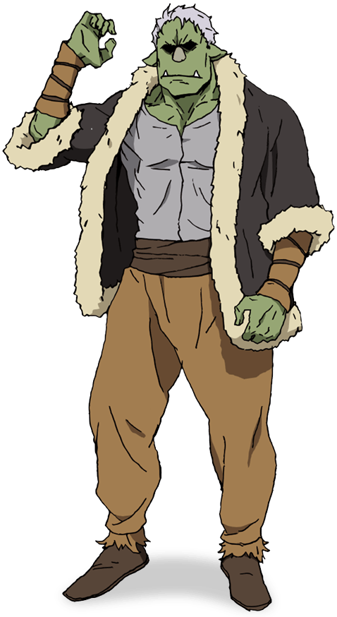
『 Ogro 』
Tipo: Semi-Humano
Origem e Descrição breve:
Os ogros são uma rara espécie de semi-humanos conhecidos por sua força monstruosa e aparência intimidadora. Apesar de lembrarem humanos em estrutura corporal, possuem corpos extremamente musculosos e altos, com média superior a dois metros de altura. Seus chifres, pele colorida em tons variados e presas pronunciadas os tornam facilmente reconhecíveis.Características:
Força física extremamente elevada mesmo entre semi-humanos.Capazes de produzir armas, armaduras e ferramentas complexas.
Personalidade agressiva, orgulhosa e voltada para combate.
Habilidades Intrínsecas:
『 Fortalecimento 』Cultura:
Vivem em pequenas tribos isoladas nas florestas e montanhas distantes do continente principal. Apesar de agressivos, desenvolveram culturas guerreiras altamente disciplinadas, focadas em honra, combate e aperfeiçoamento marcial. Seus equipamentos possuem um estilo único conhecido como “Samurai”, completamente diferente das armaduras e armas tradicionais do continente.Observações:
Extremamente raros, podendo passar décadas sem que um seja avistado.Muitos trabalham como mercenários devido à fama como guerreiros devastadores.
A expectativa de vida média gira em torno de cem anos, embora existam histórias sobre ogros que viveram por mais de trezentos anos.
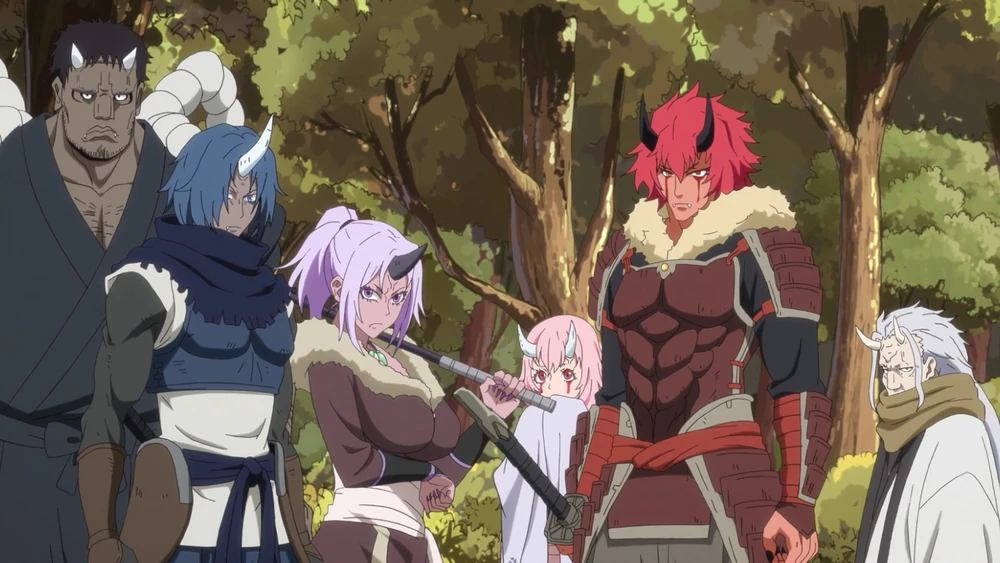
『 Kijin 』
Tipo: Semi-Humano
Origem e Descrição breve:
Características:
Habilidades Intrínsecas:
『 Controle de Chamas 』『 Transformação em Chamas 』
Cultura:
Observações:
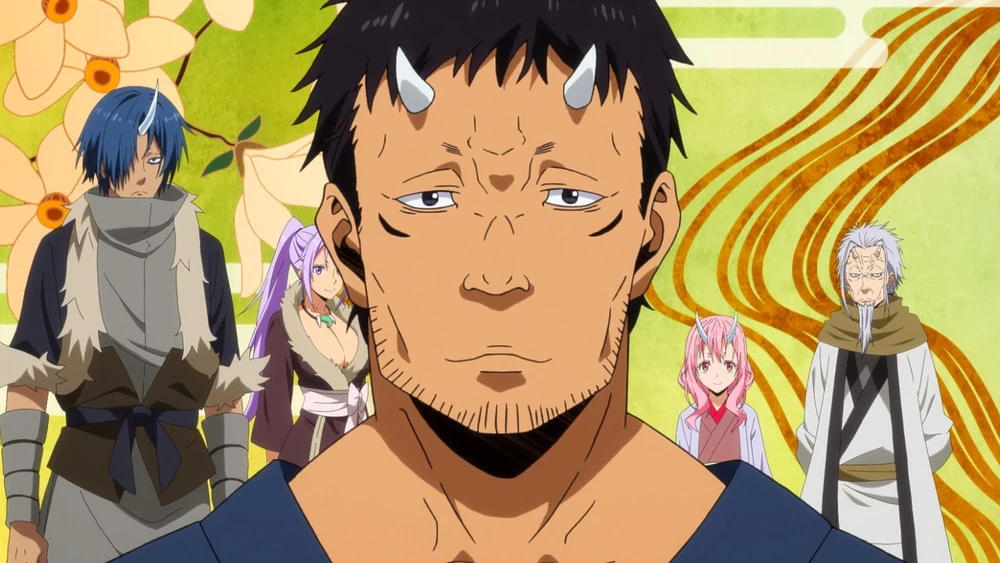
『 Orc 』
Tipo: Semi-Humano
Origem e Descrição breve:
Características:
Habilidades Intrínsecas:
Nenhuma.Cultura:
Observações:
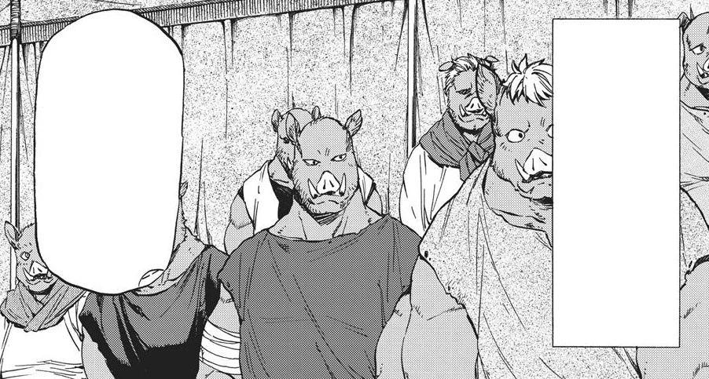
『 Homem-Lagarto 』
Tipo: Semi-Humano
Origem e Descrição breve:
Características:
Habilidades Intrínsecas:
『 Armadura de Escamas 』Cultura:
Observações:
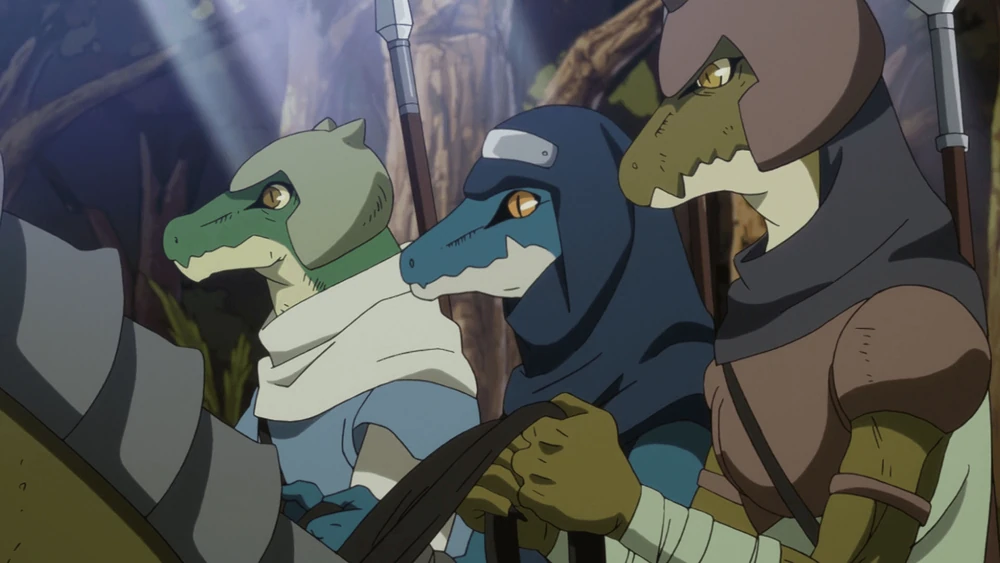
『 Licantropo 』
Tipo: Semi-Humano
Origem e Descrição breve:
Os licantropos são uma espécie de semi-humanos capazes de assumir características completas ou parciais de seus respectivos animais à vontade. São conhecidos por sua força física elevada e natureza guerreira. Sua espécie é dividida em diferentes grupos baseados em linhagens bestiais específicas.Características:
Capazes de se transformar parcial ou completamente em animais.Grande força física, sentidos aguçados e resistência natural.
Juventude extremamente prolongada entre 30 a 50 anos.
Possuem instintos competitivos e apreciam batalhas contra adversários fortes.
Habilidades Intrínsecas:
『 bestializar 』『 corpo bestial 』
『 auto regeneração 』
Cultura:
Os licantropos vivem espalhados pelo continente, tendo uma maior concentração entre os Impérios Orientais e a Dinastia Feiticeira. Sua cultura valoriza combate, caça, força e sobrevivência. Entre eles, guerreiros fortes são altamente respeitados independentemente de posição social ou idade.Observações:
São divididos em sete grupos principais: Caninos, Felinos, Primatas, Ursos, Serpentes, Aviários e Grandes.Mesmo entre outras espécies guerreiras, os licantropos possuem fama por sua ferocidade em combate.
Muitos atuam como mercenários, caçadores ou soldados de elite devido às suas capacidades físicas superiores.
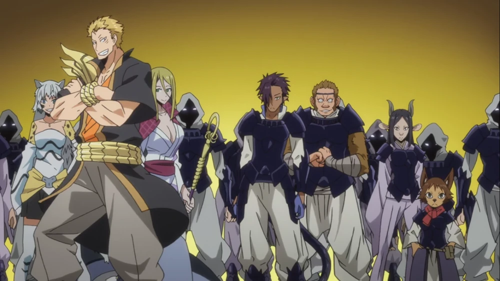
『 Inseto 』
Tipo: Monstro / Insectoide
Origem e Descrição breve:
Os insetos são monstros semi-espirituais originários de outro universo, representando o estágio mais jovem dos Insectares. Capazes de assumir formas inspiradas em qualquer tipo de inseto ou aracnídeo, variam entre formigas, abelhas, aranhas, escorpiões e inúmeras outras variações.Características:
Sua carapaça evolui constantemente conforme acumulam força.Mesmo os mais fracos possuem força próxima à dos licantropos.
Funcionam através de inteligência coletiva e comunicação mental.
Habilidades Intrínsecas:
『 Exoesqueleto 』『 Telepatia 』
『 habilidade dependente do tipo de inseto 』
Cultura:
Insetos vivem em colônias altamente organizadas guiadas por instintos coletivos e hierarquias rígidas tendo normalmente uma rainha que controla a ordem total da colônia. Seu objetivo principal é evolução e expansão, constantemente buscando fortalecer seus corpos e aproximar-se do próximo estágio evolutivo.Observações:
Seu próximo estágio evolutivo são os Insectares, formas humanoides muito mais poderosas.Os materiais de seus exoesqueletos podem variar entre ferro, aço mágico e até oricalco.
Certos membros de sua espécie que viveram o suficiente podem ser encontrados ostentando aparências meio-humanóides devido a estar no processo incompleto de evoluir para Insectares, com poder que presumivelmente corresponde a esse status.
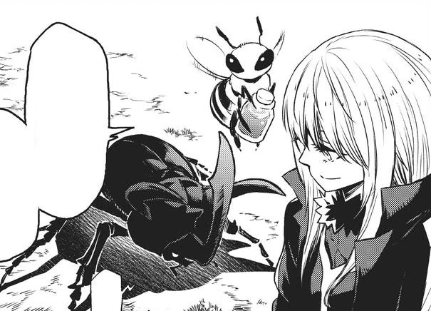
『 Golem 』
Tipo: Semi-Humano / Construto
Origem e Descrição breve:
Golems são construtos criados a partir de materiais inorgânicos através da magia. Embora a maioria seja criada artificialmente por magos, também existem golems naturais formados espontaneamente pela concentração de magículas. Seus corpos podem ser feitos de diversos materiais.Características:
Corpos extremamente resistentes e adaptáveis.O material de seus corpos evolui junto com seu crescimento em poder.
Podem variar desde pequenas bonecas até gigantescas armas de guerra.
Habilidades Intrínsecas:
『 Corpo de Magíaço 』Cultura:
Golems artificiais normalmente servem seus criadores, funcionando como guardiões, trabalhadores ou armas mágicas. Já os golems naturais possuem comportamento próprio, desenvolvendo consciência e identidade conforme acumulam experiências ao longo do tempo.Observações:
Os materiais mais comuns para criação de golems são argila, ferro, pedra e madeira.Alguns magos utilizam magípedras ou magíaço para produzir versões mais avançadas.
Podem ser criados manualmente ou através do feitiço “Criar Golem”.
Mesmo objetos simples como bonecas ou bichos de pelúcia podem se tornar golems.
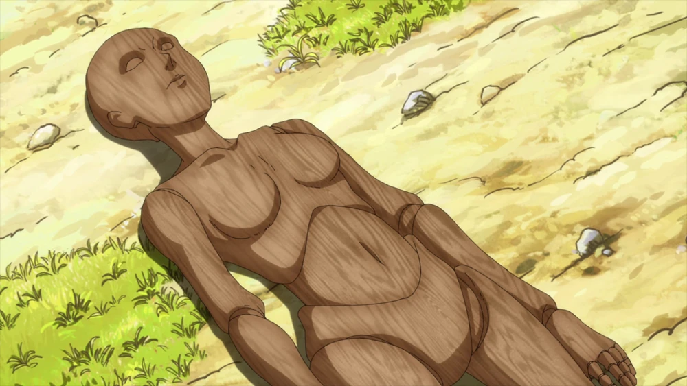